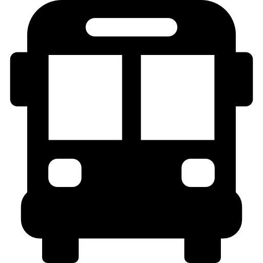
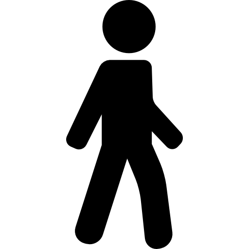

GeoLook
Localisez-vous puis entrez une destination
Comment ça marche
Cliquez sur "Me localiser", puis entrez votre destination pour obtenir un itinéraire.
Me localiser
Mode de transport
Voiture

Transport
Vélo

À pied